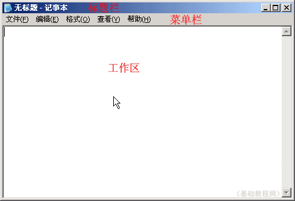

HTML 基础入门教程
六、播放视频 返回
记事本是一个小巧的文本编辑器，可以用它来完成代码的输入，保存成网页以后用浏览器来查看，下面我们来看一个练习；
1、启动记事本
1）点击“开始－所有程序－附件－记事本”；
2）记事本的窗口主要包括标题栏、菜单栏、工作区，左上角有一个一闪一闪的光标插入点竖线；

3）点菜单“文件－保存”命令，以“播放视频.html”为文件名，类型为“所有文件”，保存文件到自己的文件夹，注意文件名后缀为英文字母；
2、输入内容
1）在工作区中输入下列内容，注意两个地址是一样的，以wmv结尾：
每行一个标签，也可以用复制的方法，这样简单且不容易出错；
<object name="w1" width="320" height="300" classid="clsid:6bf52a52-394a-11d3-b153-00c04f79faa6">
<param name="autostart" value="0" / >
<param name="enabled" value="-1" / >
<param name="url" value="http://teliute.org/wmv/australia.wmv" />
<embed src="http://teliute.org/wmv/australia.wmv" width="320" height="300" type="audio/mpeg" autostart="0" autosize="0" /></object>
这儿的<param name=... />标签是播放器的各个参数，可以查阅相关的资料；
视频文件的地址一般以wmv、rm、asf等结尾，如果是其他的，说明视频地址加密了；
2）按Ctrl＋S组合键保存一下文件，在自己的文件夹中找到“播放视频”文件，双击打开，看一下页面效果；
如果视频不能播放，只是空白的画面，就换一个有效的视频地址；
注意：如果不能上网，则按下列操作：
1）把本课文件夹中的 australia.wmv 文件复制到自己的文件夹中，
2）把代码中第4行改成<param name="url" value="./australia.wmv" />
3）把代码中第5行改成<embed src="./australia.wmv" width="320" height="300"
本节学习了在网页中播放视频的基本方法，如果你成功地完成了练习，请继续学习下一课内容；
本教程由86团学校TeliuTe制作|著作权所有
基础教程网：http://teliute.org/
美丽的校园……
转载和引用本站内容，请保留作者和本站链接。